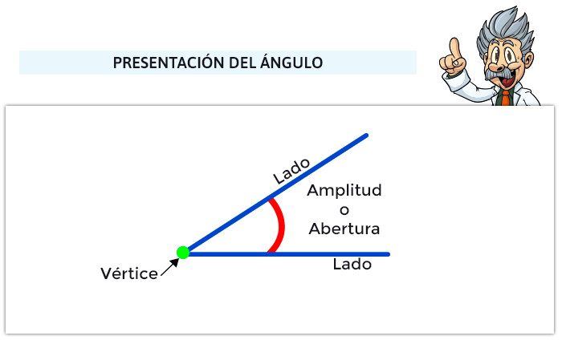
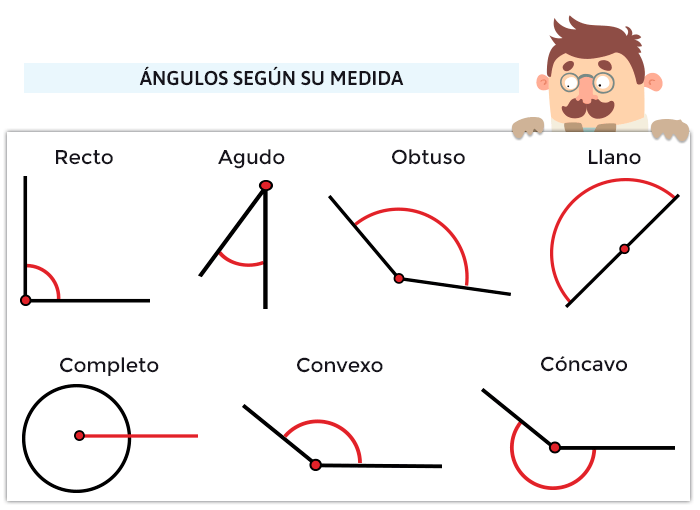

Angulos
Empezaremos diciendo que un ángulo está formado por dos rectas secantes: ambas coinciden en un punto al que llamamos vértice, y el resto de puntos pasan a formar lo que nombramos como lados. Los ángulos tienen una amplitud que se mide en grados.
Tipos de ángulos
La clasificación de los ángulos según sus medida sería:
- Ángulos agudos:Son todos los ángulos con una amplitud menor de 90º (>90º)
- Ángulos rectos:Son los ángulos que miden, exactamente, 90º.
- Ángulos obtusos:Son los ángulos que miden más de 90º y menos de 180º (>90º y <180º)